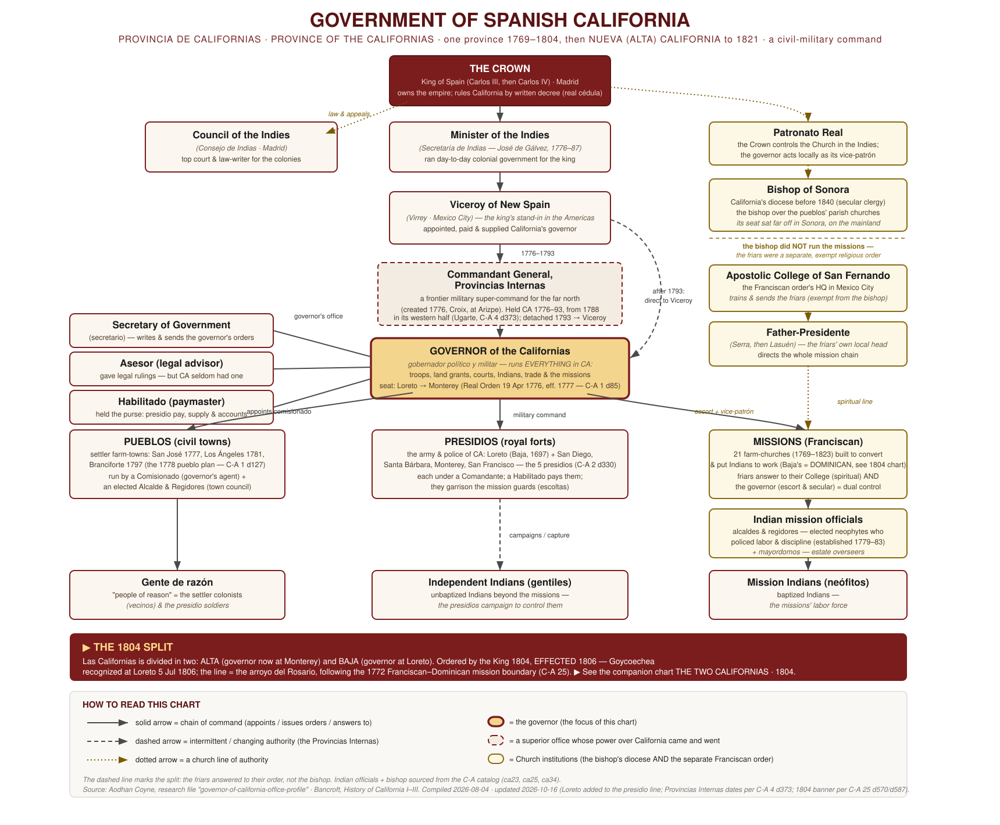
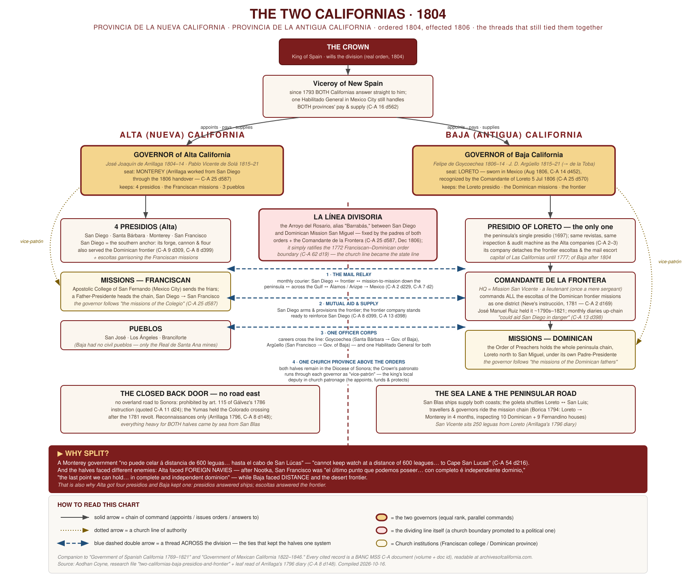
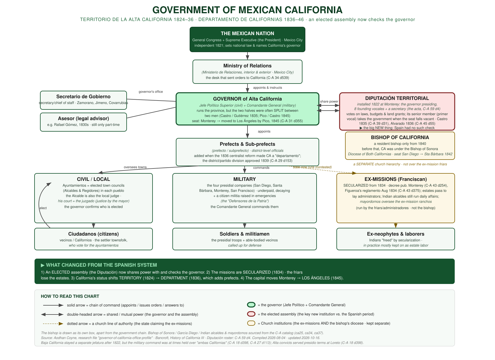
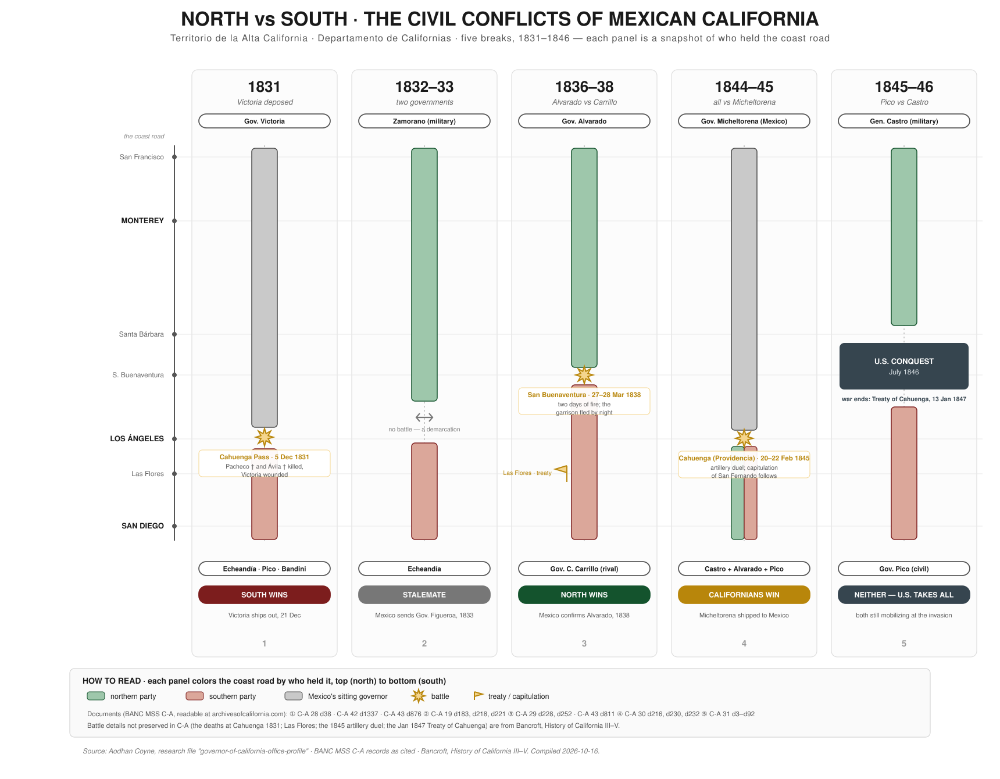
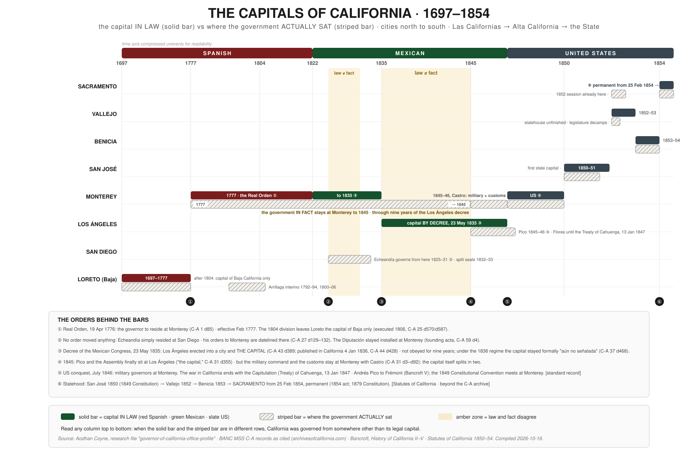

These charts are drawn from the archive you are standing in. The database on this site catalogues nearly 35,000 documents of the Archives of California, and the charts distill what those records themselves say: a governor's letterbook headed «Loreto», a battle report from San Buenaventura, the founding acta of the Diputación. Every citation in the form C-A 29 d228 names the exact record behind a claim: search it on this site and the document opens. Read the charts as a map of the system; use the citations as doors back into the archive. One governor held both the civil and the military power of a province that once ran from Cape San Lucas to San Francisco; a church boundary drawn in 1772 became a state line; a decree made Los Ángeles the capital and was ignored for nine years. The documents carry all of it.
- Government of Spanish California, 1769–1821; the chain of command, Crown to neophyte
- The Two Californias, 1804; the division, and the threads that still tied the halves together
- Government of Mexican California, 1822–1846; the elected assembly arrives
- North vs South, 1831–1846; five civil conflicts in five snapshots
- The Capitals of California, 1697–1854; the capital in law vs where the government actually sat
1 · Government of Spanish California, 1769–1821
The Provincia de Californias was a gobierno político y militar: one governor commanded the troops, granted the land, judged the serious cases, and acted as the king's local church-patron. Above him the line of authority moved; a frontier super-command at Arizpe held California until 1793, when the province passed back to the Viceroy; and beside him the Franciscans answered to their own college in Mexico City, not to the distant Bishop of Sonora.

2 · The Two Californias, 1804
In 1804 the king divided Las Californias in two. The dividing line was not surveyed: the padres of the two mission orders and the frontier commander simply adopted the arroyo between San Diego and Dominican Mission San Miguel; the church boundary of 1772 promoted to a political one. The chart shows both new governments and, in blue, the four threads that kept the halves one system: the mail relay, mutual military aid, a single officer corps, and a single diocese.

3 · Government of Mexican California, 1822–1846
Independence kept the machine and changed its head: orders now came from a ministry in republican Mexico City, and for the first time an elected assembly; the Diputación, installed at Monterey in 1822; shared power with the governor and could hand the government to its senior member when the seat fell vacant. Secularization (1834) then dismantled the mission economy that the whole Spanish column had rested on.

4 · North vs South, 1831–1846
Mexican California broke against itself five times in fifteen years. Each panel below is a snapshot of the coast road from San Francisco to San Diego, colored by who held it; green for the northern party, red for the southern, gray for Mexico's sitting governor; with the battles marked where the colors meet and the winner named at the foot. The pattern behind all five: the civil and military commands were divisible by law, Monterey held the customs house while a standing decree made Los Ángeles the capital, and Mexico City was too far away to referee.

5 · The Capitals of California, 1697–1854
Where was the capital? The honest answer needs two bars per city: a solid bar for the capital in law, a striped bar for where the government actually sat. They disagree twice; when Governor Echeandía simply lived at San Diego, and for the nine years Los Ángeles was the capital by decree while every governor stayed at Monterey; before the American state settled the question at Sacramento in 1854.
